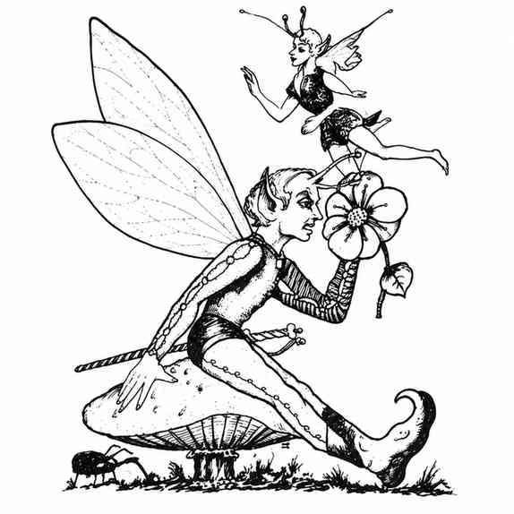

精灵妖 · Sprite
 |
|
精灵妖居住在草地和林间空地，十分害羞隐秘，却憎恨一切邪恶与丑陋。它们装备细剑（效果等同匕首）和小弓，射程与效果只有短弓的一半；箭上涂有特殊药膏，被箭击中的生物必须通过毒素豁免，否则昏睡 1–6 小时。精灵妖随后会杀死邪恶生物，或把善良生物带到远离遭遇地点的地方。任何生物有 75% 概率察觉不到精灵妖；除非先受到骚扰，它们只攻击邪恶生物。
精灵妖可以随意隐形，在 5 寸范围内侦测善恶，并能无声移动。隐形时，敌人命中它们的检定 −4。精灵妖会说自己的语言和通用语。